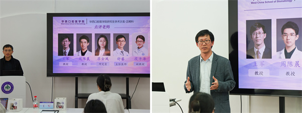

学院通知 · 科研创新
“学术创新·交流共进”正畸学系研究生学术沙龙圆满举办
发布时间：2026/04/28
为搭建研究生学术交流平台、激发科研创新活力，我院研究生部联合正畸学系于4月22日成功举办研究生学术沙龙活动。本次活动特邀王军教授、周陈晨教授、廖金凤研究员、舒睿主任医师以及段沛沛副教授等临床与科研一线专家莅临点评，学院研究生齐聚一堂，共探学术前沿。 活动伊始，研究生部部长裴锡波教授及正畸学系、正畸科主任王军教授为活动致辞，勉励同学们深耕学术、勇于探索，在交流中碰撞思想、收获成长。随后，五位优秀博士生依次登台分享科研成果。2023级博士生陈硕（导师邹淑娟教授）、2024级博士生高文桢（导师周陈晨教授）、2023级博士生谢雅馨（导师韩向龙教授）、2024级博士生叶程心月（导师王军教授）、2025级博士生丁若邻（导师赵志河教授），分别围绕各自的研究方向汇报进展与思考，展现出扎实的学术素养与创新思维。 点评环节中，各位专家针对汇报内容精准剖析、细致指导，从研究设计、机制阐释、临床转化等维度提出专业建议，为同学们完善科研思路、优化研究方向提供重要参考，现场互动积极、学术氛围浓厚。 本次沙龙为正畸学系研究生搭建了高效的学术交流桥梁，有效拓宽了科研视野、激发了创新热情。未来，我院也将持续开展此类学术活动，助力研究生成长成才，推动学术科研与临床的深度融合发展。
